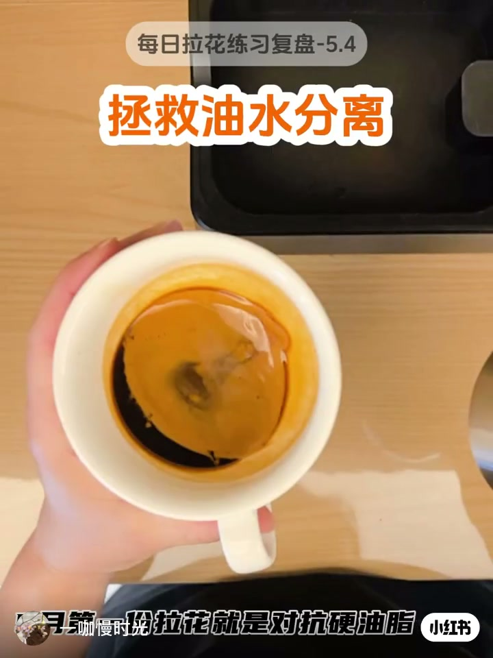
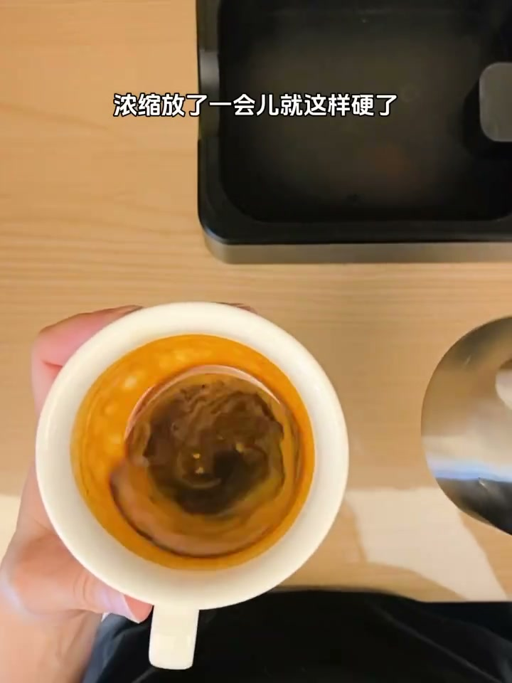
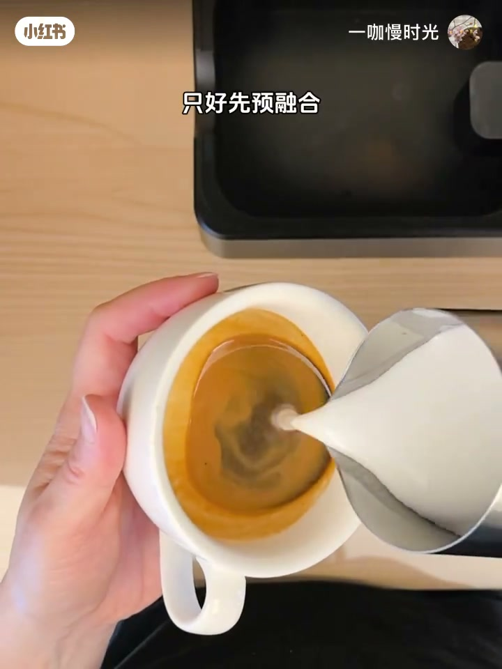
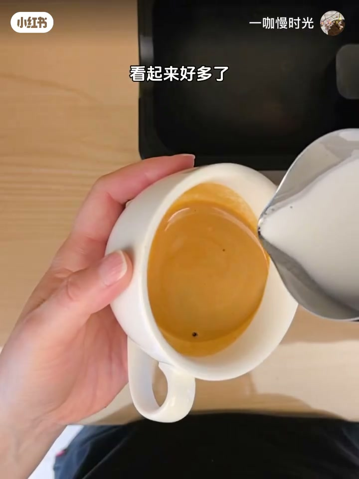
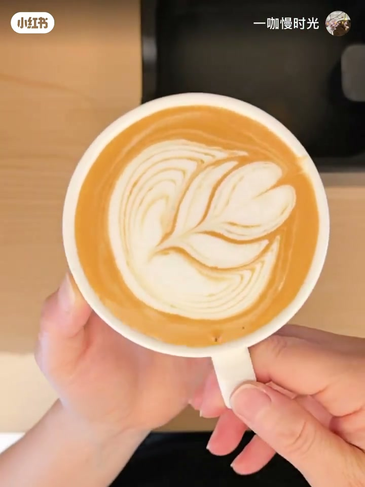

内容要点
41 秒实操复盘：油水分离的浓缩不是直接放弃，而是先预融合再拉；能出图，但别期待边缘完美。
知识结构
好不容易有机会拉花，浓缩放一会儿就「硬了」：油脂结块、液面斑驳，典型油水分离。
使劲摇了还是结块，只好先用奶流预融合打碎硬油脂；融合后「看起来好多了」，再进入正式拉花。
摆动拉出多层叶形/心形成品；作者自评边缘还是有点锯齿——硬油脂被救回，不等于边缘完美。
对抗硬油脂的顺序：发现问题 → 摇匀无效则预融合 → 再拉花；先救液面，再谈图案，边缘瑕疵可接受。
图文实录
开场：硬油脂上的「拯救」标题
镜头俯拍白瓷杯，杯中浓缩油脂已经结成斑驳块状。画面叠出灰底标签「每日拉花练习复盘-5.4」，正中大字「拯救油水分离」，底栏写「拉花就是对抗硬油脂」——把今天的练习直接钉在问题上：不是审美炫技，而是先对付放凉后硬化的油脂层。
口播（繁体 ASR，正文已转简体）强调稀缺机会碰上坏底液：放一会儿，油脂就硬到肉眼可见。视频未交代具体放了多久、豆种或萃取参数，证据只落在「放了一会儿」与画面结块。


预融合：先救液面，再谈画图
作者先尝试摇杯，但「使劲摇了还是结块」（Whisper 记作「时间摇了」，按语境校正）。结块打不散，就转入计划 B：奶缸抬到杯心上方，细流注入做预融合——画面字幕写的是「只好先预融合」（ASR「育融合」已按字幕校正）。
细白奶流切开硬化油脂表面，把斑驳底液搅成更均匀的浅棕液面。作者自评「看起来好多了」：预融合的目标不是立刻出花，而是把底液救回可拉状态，给后续摆动腾出干净画布。


成杯：能拉，但边缘仍有锯齿
液面稳住后，作者贴近液面加大摆动，层层推出叶形纹路并收心。成杯俯拍可见多层白线与心形收尾，整体已经是「可用」的练习杯。收尾自评却很诚实：边缘还是有点锯齿——硬油脂被救回来了，不代表对比度和边缘锐利度能回到新鲜浓缩的水平。
Whisper 第二段（约 00:30–00:40）与第一段高度重复且 no_speech_prob 很高，疑似幻觉重复；页面仍完整保留原始分段作证据。口播为繁体识别，正文叙述与图注已统一为简体中文。
